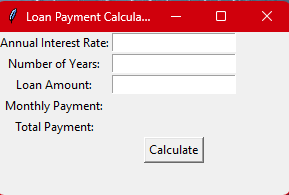
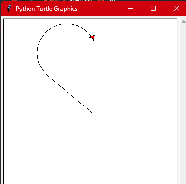
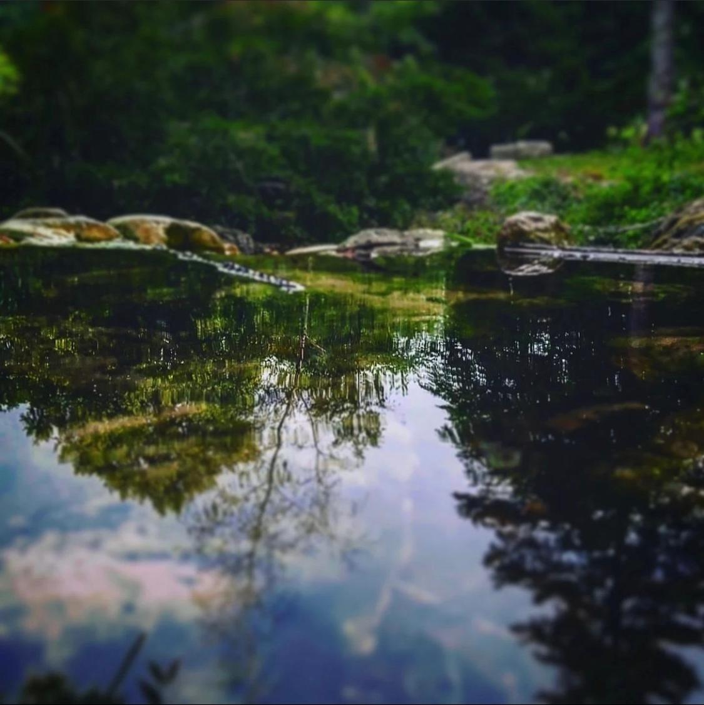

Projects

Loan Payment Calculator
Using Python and the tkinter module for creating graphical user interfaces (GUIs),
I created a convenient loan payment calculator. By entering your yearly interest rate,
the number of years for your loan term, and the loan amount, you can simply calculate your monthly and total loan payments.
Simply input your information in the appropriate text entry sections, click the "Calculate" button,
and watch as it calculates and shows your monthly and total payments in real time.
This easy-to-use interface streamlines the procedure and delivers instant financial information.
Whether you're considering a mortgage or a personal loan, this calculator can help you make educated financial decisions.

Drawing Application
Using Python's tkinter and turtle graphics packages,
I constructed a captivating heart painting program.
With this charming script, you may watch as a heart form is displayed nicely on your screen.
The heart is aesthetically appealing since it is designed with a sequence of curves
and filled with a brilliant crimson color.
A "Hey" message is also tastefully put at the bottom of the heart.
The entire process is a fusion of art and code,
demonstrating Python's creative ability in making spectacular visual effects.
When you run this code,
you'll see an artistic masterpiece come to life on your computer screen,
due to Python's flexible libraries.

The Water Body Photograph
This magnificent image was obtained on a peaceful afternoon stroll in the center of nature's magnificence.
The sparkling body of water,
glittering in the sun's warm embrace, mirrors the world in its crystal-clear depths.
The surrounding lush vegetation lends a bright tranquilly to the image,
as if Mother Nature herself lovingly created this magnificent masterpiece.
The soft ripples on the water's surface tell tales of quiet and tranquilly,
making this image a genuine expression of the beauty
that resides at the core of our natural world,
and I am grateful for the opportunity to capture this moment via my lens.